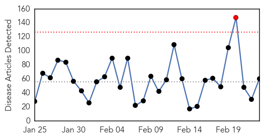
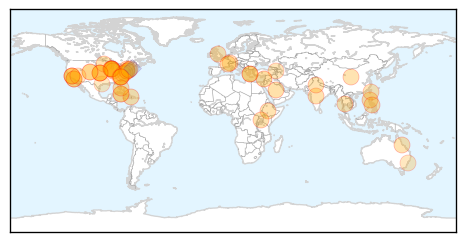
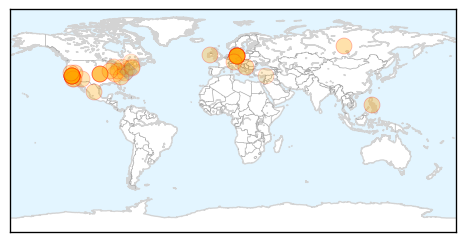

Unknown
30-Day Web Trend
1 alerts, 0 warnings

30-Day Twitter Trend
0 alerts, 0 warnings

Article Locations

Article Confidences

Top Articles:
- 0.997
- U.N. experts warn of 'critical knowledge gaps' on Saudi MERS virus
- 0.992
- Deadly Superbug Outbreak In North Carolina Hospital
- 0.973
- DOH allays bird flu fears after OFW from China dies
- 0.953
- New Virus Kansas: CDC Discovers New Tick-Borne Virus In Kansas : Home : Jobs & Hire
- 0.946
- The most from the coast
- 0.945
- Pinoy musician, 52, possibly died of bird flu; PH remains free of the disease
- 0.934
- Superbug strikes again, killing two in North Carolina
- 0.933
- That mysterious virus that killed Kansas man? Never seen before: CDC
- 0.924
- Editorial: UCLA must be transparent about superbug investigation
- 0.918
- Over 100 Sick on Celebrity Equinox
- 0.917
- Chicago Tribune
- 0.917
- Chicago Tribune
- 0.917
- Chicago Tribune
- 0.917
- Chicago Tribune
- 0.917
- Chicago Tribune
- 0.917
- Chicago Tribune
- 0.917
- Chicago Tribune
- 0.917
- Chicago Tribune
- 0.917
- Chicago Tribune
- 0.917
- Chicago Tribune
- 0.917
- Chicago Tribune
- 0.917
- Chicago Tribune
- 0.917
- Chicago Tribune
- 0.917
- Chicago Tribune
- 0.917
- Chicago Tribune
- 0.917
- Chicago Tribune
- 0.917
- Chicago Tribune
- 0.917
- Chicago Tribune
- 0.917
- Chicago Tribune
- 0.917
- Chicago Tribune
- 0.917
- Chicago Tribune
- 0.917
- Chicago Tribune
- 0.917
- Chicago Tribune
- 0.914
- WBTV 3 News, Weather, Sports, and Traffic for Charlotte, NC
- 0.866
- CRE superbug leaves 2 dead and 16 hospitalized in North Carolina
- 0.856
- Suspected norovirus outbreak sickens 120 people in Taiwan
- 0.848
- U.S. lawmaker seeks congressional hearing on ‘superbug’ outbreak
- 0.847
- What You Should Know About ‘Superbug’ CRE
- 0.840
- Media Advisory-CDC and Partners Investigate Newly Discovered Virus
- 0.816
- Respiratory virus season in Armenia
- 0.811
- Newly Discovered Virus Linked to Death of Kansas Man
- 0.780
- Superbug spreading in North Carolina, one dead
- 0.778
- Superbug Kills 2 in Charlotte, North Carolina
- 0.753
- 1 dead after superbug cases reported in North Carolina
- 0.748
- Margao sees 50% decline in malaria cases
- 0.736
- First tests clear 100 of TB at childcare centre
- 0.733
- Most HIV Infections Come From Undiagnosed or Untreated People
- 0.706
- Health Beat: Is Your Hospital Making You Sicker?
- 0.705
- CRE superbug spreads to North Carolina, kills two
- 0.664
- HIV Cure News and Updates: A New HIV Strain has been Discovered in Cuba - Crossmap Christian News
Showing top 50 articles...
Top Tweets:
- 0.661
- Today's 4 MERS cases & 1 death bring KSA's totals for Feb to 60 cases 24 deaths. Staggering numbers in absence of large hospital outbreak
Measles
30-Day Web Trend
11 alerts, 7 warnings

30-Day Twitter Trend
4 alerts, 0 warnings

Article Locations
Article Confidences

Top Articles:
- 0.986
- Berlin counts 254 new cases of measles in 2015
- 0.982
- Measles Continue to Spread, Reaching 154 Cases in 17 States
- 0.981
- 10th measles case confirmed in Toronto
- 0.981
- Germany measles: Toddler death fuels compulsory vaccination debate
- 0.979
- Measles virus circulating in Ontario is a variant previously unknown to WHO
- 0.972
- German toddler dies of measles amid vaccine row
- 0.971
- American parents are increasingly choosing fear over science
- 0.969
- Measles Cases Surpass 150 in U.S.
- 0.967
- How Vaccines Shape Our View of Diseases
- 0.958
- German Toddler Dies of Measles Amid Vaccine Debate
- 0.948
- Toddler Dies In Germany Measles Outbreak
- 0.946
- Toddler dies of measles in Germany as outbreak fears grow
- 0.941
- To Fear or Not to Fear? That Is the Measles Question
- 0.934
- More measles cases tied to Disneyland, Illinois day care Republican American
- 0.932
- Toddler dies as measles outbreak hits German capital
- 0.932
- Measles Outbreak Reminds of Vaccination Importance
- 0.932
- Measles death in Germany prompts calls for mandatory vaccinations
- 0.932
- Baby boy dies in first known fatality recorded in Germany's latest outbreak of measles
- 0.926
- Toddler dies as measles outbreak escalates in Germany · TheJournal.ie
- 0.923
- Feb. 23 news: FAQs on measles, superbug in North Carolina, dishes by hand decreases child allergies
- 0.910
- Infants At Risk Of Measles From High School Day Care Allowed To Return - Story
- 0.908
- en espanol How to Protect Children During a Measles Outbreak
- 0.899
- US measles outbreak not linked to illegal immigration, health official says
- 0.874
- Toddler dies as measles outbreak hits German capital
- 0.871
- Measles: Is it really scary? What’s the big deal?
- 0.867
- Calif. measles outbreak linked to Philippines?
- 0.860
- Measles kill toddler as Berlin school closes
- 0.854
- Child dies of measles in Berlin; Germany vows to boost vaccinations
- 0.841
- Dana Hills High School
- 0.828
- Child dies of measles in Berlin, Germany vows to boost vaccinations
- 0.821
- A decision that saves lives
- 0.768
- Kent County child does not have measles, test shows
- 0.743
- Measles vaccination rates improving but potential for outbreak remains
- 0.743
- Ontario officials warn of measles exposure at Toronto youth event
- 0.715
- Toddler Dies, School Closes After Country's First Death From The Disease Since 2013
- 0.675
- Where does New Hampshire stand on childhood vaccine exemptions?
- 0.591
- Syria: 36 Children Die After Receiving 'UN-Sponsored Contaminated Measles Vaccine'
- 0.543
- A dose of reality The McGill Daily
- 0.507
- Lawyers Stumped by Measles Outbreak
- 0.505
- Doctors working to boost Western New York’s low HPV vaccination rates
- 0.505
- Guide to vaccinating - Sunday, Feb. 22, 2015
- 0.501
- Guide to vaccinating
Top Tweets:
- 0.549
- RT: Vaccinated or Not... Tell YOUR Kids to Wash their Hands! measles flu virus vaccine handhygiene kids hai mrsa ht…